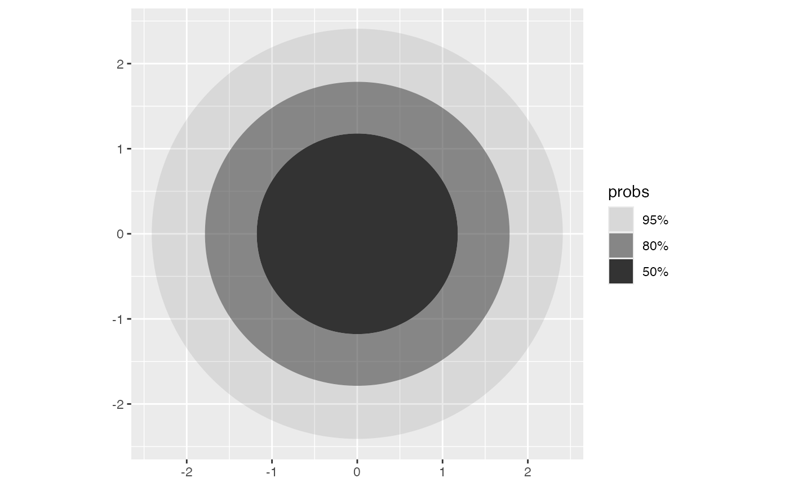
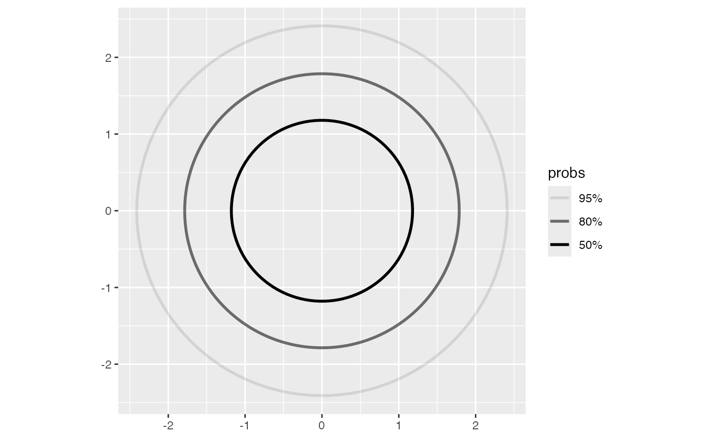
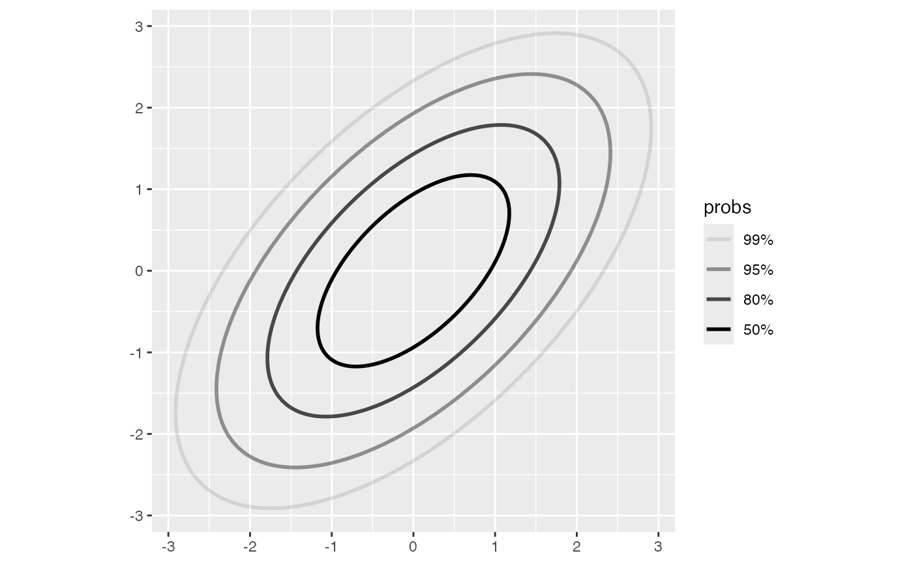

geom_pdf_2d() visualizes a theoretical bivariate probability density
function either through highest density regions (HDRs) or as a raw density
raster. For HDRs it is a thin, probability-facing wrapper around
ggdensity: HDR computation, contour construction, probability labels,
and default aesthetics are delegated to ggdensity::geom_hdr_fun() for
type = "hdr" (filled regions) and ggdensity::geom_hdr_lines_fun() for
type = "hdr_lines" (boundary contours). For type = "raster", the density
is evaluated on the requested grid and drawn with ggplot2::geom_raster().
Arguments
- mapping
Set of aesthetic mappings created by
aes(). If specified andinherit.aes = TRUE(the default), it is combined with the default mapping at the top level of the plot. You must supplymappingif there is no plot mapping.- data
The data to be displayed in this layer. There are three options:
If
NULL, the default, the data is inherited from the plot data as specified in the call toggplot().A
data.frame, or other object, will override the plot data. All objects will be fortified to produce a data frame. Seefortify()for which variables will be created.A
functionwill be called with a single argument, the plot data. The return value must be adata.frame, and will be used as the layer data. Afunctioncan be created from aformula(e.g.~ head(.x, 10)).- position
A position adjustment to use on the data for this layer. This can be used in various ways, including to prevent overplotting and improving the display. The
positionargument accepts the following:The result of calling a position function, such as
position_jitter(). This method allows for passing extra arguments to the position.A string naming the position adjustment. To give the position as a string, strip the function name of the
position_prefix. For example, to useposition_jitter(), give the position as"jitter".For more information and other ways to specify the position, see the layer position documentation.
- ...
Other arguments passed on to
layer()'sparamsargument. These arguments broadly fall into one of 4 categories below. Notably, further arguments to thepositionargument, or aesthetics that are required can not be passed through.... Unknown arguments that are not part of the 4 categories below are ignored.Static aesthetics that are not mapped to a scale, but are at a fixed value and apply to the layer as a whole. For example,
colour = "red"orlinewidth = 3. The geom's documentation has an Aesthetics section that lists the available options. The 'required' aesthetics cannot be passed on to theparams. Please note that while passing unmapped aesthetics as vectors is technically possible, the order and required length is not guaranteed to be parallel to the input data.When constructing a layer using a
stat_*()function, the...argument can be used to pass on parameters to thegeompart of the layer. An example of this isstat_density(geom = "area", outline.type = "both"). The geom's documentation lists which parameters it can accept.Inversely, when constructing a layer using a
geom_*()function, the...argument can be used to pass on parameters to thestatpart of the layer. An example of this isgeom_area(stat = "density", adjust = 0.5). The stat's documentation lists which parameters it can accept.The
key_glyphargument oflayer()may also be passed on through.... This can be one of the functions described as key glyphs, to change the display of the layer in the legend.
- na.rm
If
FALSE, the default, missing values are removed with a warning. IfTRUE, missing values are silently removed.- show.legend
logical. Should this layer be included in the legends?
NA, the default, includes if any aesthetics are mapped.FALSEnever includes, andTRUEalways includes. It can also be a named logical vector to finely select the aesthetics to display. To include legend keys for all levels, even when no data exists, useTRUE. IfNA, all levels are shown in legend, but unobserved levels are omitted.- inherit.aes
If
FALSE, overrides the default aesthetics, rather than combining with them. This is most useful for helper functions that define both data and aesthetics and shouldn't inherit behaviour from the default plot specification, e.g.annotation_borders().- fun
A bivariate density function accepting a length-2 numeric vector
v = c(x, y)and returning one numeric density value.- xlim, ylim
Numeric vectors of length 2 specifying the evaluation range.
- n
Grid resolution. Defaults to
100.- args
A named list of additional arguments passed to
fun.- probs
HDR probabilities passed to ggdensity. Defaults to
c(0.99, 0.95, 0.8, 0.5). Ignored whentype = "raster".- type
Character.
"hdr"(default) draws filled highest density regions;"hdr_lines"draws HDR boundary contour lines;"raster"draws the evaluated density as a dark-gray raster with alpha scaled from 0 to 1.
Details
The supplied density uses ggfunction's 2D function convention: fun
receives a single numeric vector v = c(x, y) and returns one density
value. ggdensity expects a function of two vectorized arguments
fun(x, y); geom_pdf_2d() adapts between the two interfaces internally,
closing over args in the process.
Raw density rasters use geom_function_2d_1d() with
raster_aes = "alpha": the evaluated density is mapped to literal alpha
values scaled from 0 to 1 by default, with a fixed dark gray fill. probs
is ignored for type = "raster".
For arbitrary iso-density contours (level sets not calibrated to probability
content), use geom_function_2d_1d() with type = "contour" or
"contour_filled".
Computed variables
HDR computed variables and default aesthetics are those supplied by the
delegated ggdensity stat. In particular, the built data includes an
ordered factor probs, which is mapped to alpha by default for filled
HDRs. Raster layers expose after_stat(z), the evaluated density value,
and scale it to literal 0–1 alpha values by default.
See also
ggdensity::geom_hdr_fun() and ggdensity::geom_hdr_lines_fun()
for the underlying HDR machinery; geom_function_2d_1d() for raw
iso-density contours; geom_pdf() for univariate densities.
Examples
dbvn <- function(v, mu = c(0, 0), Sigma = diag(2)) {
x <- matrix(v - mu, ncol = 1)
Sinv <- solve(Sigma)
1 / (2 * pi * sqrt(det(Sigma))) *
exp(-0.5 * as.numeric(t(x) %*% Sinv %*% x))
}
ggplot() +
geom_pdf_2d(
fun = dbvn,
xlim = c(-3, 3),
ylim = c(-3, 3),
probs = c(0.5, 0.8, 0.95)
) +
coord_equal()

ggplot() +
geom_pdf_2d(
fun = dbvn,
xlim = c(-3, 3),
ylim = c(-3, 3),
probs = c(0.5, 0.8, 0.95),
type = "hdr_lines"
) +
coord_equal()

# Parameterized via `args`
Sigma <- matrix(c(1, 0.6, 0.6, 1), 2, 2)
ggplot() +
geom_pdf_2d(
fun = dbvn,
args = list(Sigma = Sigma),
xlim = c(-3, 3),
ylim = c(-3, 3),
type = "hdr_lines"
) +
coord_equal()

ggplot() +
geom_pdf_2d(fun = dbvn, xlim = c(-3, 3), ylim = c(-3, 3), type = "raster") +
coord_equal()
